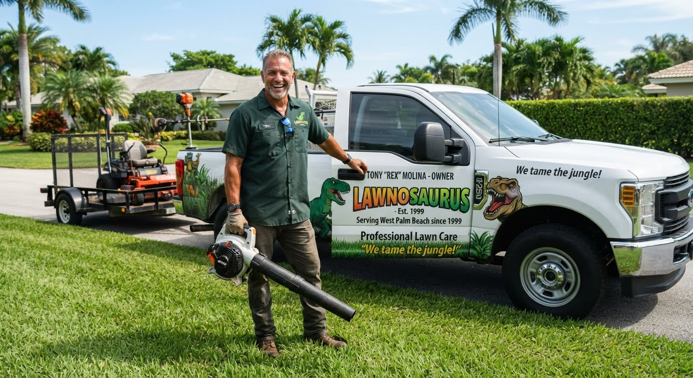

LAWNOSAURUS
LANDSCAPING & LAWN CARE
321-321-321
LANDSCAPING & LAWN CARE
321-321-321
In 1999, Tony "Rex" Molina officially brought the prehistoric theme to life by launching Lawnosaurus in West Palm Beach, Florida. Operating initially as a single-truck operation fueled by Molina's passion for meticulous landscaping and a distinctively clever marketing hook, the business quickly stood out in the competitive South Florida market. Molina leaned heavily into his "Rex" moniker, branding his fleet with vibrant dinosaur imagery and promising to "extinguish the jungle" taking over local yards. By combining reliable, high-efficiency commercial and residential grounds maintenance with an unforgettable local identity, Molina successfully transformed Lawnosaurus from a small, neighborhood startup into a beloved fixture of the Palm Beach County community.
